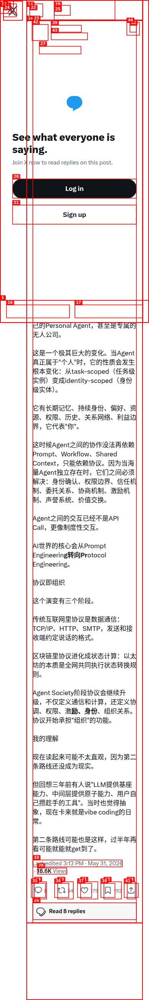

Agent 正在分叉成两条路线：Harness 只是第一阶段，协议才是下一层
这条帖把 Agent 的未来拆成两条路线：一条是以工作流编排为中心的 Harness 式多 Agent，另一条是以身份、权限与信任协议为中心的 Protocol-Native Agent。它讨论的不是工具层，而是组织层。
01 / 核心判断
这条帖不是在描述“多 Agent 更强了”，而是在说：Agent 体系的主线正在从 workflow 编排，转向协议化组织。 Harness 只是第一阶段，真正的分叉点在于 Agent 是否开始拥有持续身份与制度边界。
两条路线
- Harness 式多 Agent：多个 agent 共享上下文、共享目标、中心化调度。
- Protocol-Native Agent：每个 Agent 变成 identity-scoped 的持续实体，依赖协议协作。
- 关键变化：从任务级实例，变成身份级实体。
作者真正想强调什么
帖子的重点不在“Agent 能不能做更多事情”，而在于 Agent 之间未来靠什么互相协作：如果还是 prompt / workflow / shared context，那只是编排；一旦涉及身份确认、权限边界、委托、激励和声誉，协议就开始接管组织功能。
LLM 编排 → Protocol Engineering。
task-scoped → identity-scoped。
协议不再只是通信格式，而是组织关系本身。
02 / 两条路线的层级差异
Harness 式多 Agent
本质是 Workflow Engine + ontology。Agent 像函数、工具节点、带人格的任务单元，能力边界仍然来自工程编排。
Protocol-Native Agent
每个人都有 Personal Agent，甚至是无人公司。身份、资源、历史、偏好和关系网络被长期保留。
协议升级路径
从 TCP/IP 的数据通信，到区块链的状态计算，再到 Agent Society 的协调、权限、激励与组织关系。
最重要的分界线
只要还依赖共享上下文，就还是编排；只有协议能处理身份和组织，才算进入下一层。
03 / 公开互动与评论态势
- 评论入口：回复入口已公开可见，但被登录墙挡住。
- 传播方式：转发和收藏比回复更显眼，说明读者更倾向把它当成判断型观点而不是辩论贴。
- 信息价值：对高密度卡来说，互动数本身就是“讨论强度”证据。
04 / 截图证据

05 / 为什么这条帖值得留档
三阶段演进
- 传统互联网：协议定义数据通信。
- 区块链：协议定义状态计算。
- Agent Society：协议同时定义协调、权限、激励、身份和组织关系。
最实用的复用问题
以后遇到类似判断时，只要看作者是否已经从“怎么调度 agent”转向“agent 如何成为身份实体”。如果答案是后者，这已经不是工具链优化，而是在讨论新组织形态的底层协议。
06 / 来源
Harness、Protocol-Native、Protocol Engineering、Agent Society。
不是工具清单，是一张关于 Agent 路线分叉的判断卡。
正文 + 评论态势 + 截图三件套。